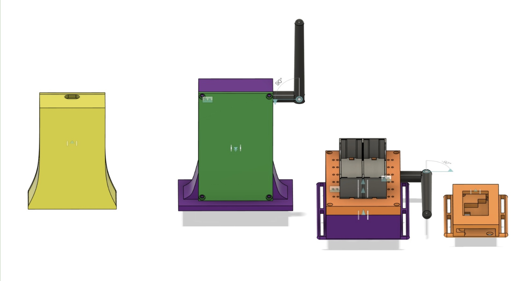

<!DOCTYPE html>
<html lang="">

<head>
    <meta charset="utf-8">
    <title></title>
</head>

<body>
    <header></header>
    <main></main>
    <footer></footer>
</body>

</html>
<!DOCTYPE html>
<html lang="it">

<head>
    <meta charset="UTF-8">
    <meta name="viewport" content="width=device-width, initial-scale=1.0">
    <title>Unearthed - Gome Neve 25/26</title>
    <style>
        /* --- VARIABILI E RESET --- */
        :root {
            --primary-yellow: #FFD700;
            --yellow-glow: rgba(255, 215, 0, 0.4);
            --dark-bg: #101010;
            --card-bg: #1a1a1a;
            --text-white: #ffffff;
            --text-black: #000000;
        }

        /* --- SCORRIMENTO FLUIDO E BARRA GIALLA --- */
        html {
            scroll-behavior: smooth;
            overflow-y: scroll;
        }

        ::-webkit-scrollbar {
            width: 14px;
        }

        ::-webkit-scrollbar-track {
            background: #101010;
        }

        ::-webkit-scrollbar-thumb {
            background: var(--primary-yellow);
            border-radius: 10px;
            border: 3px solid #101010;
        }

        ::-webkit-scrollbar-thumb:hover {
            background: #ffffff;
        }

        * {
            margin: 0;
            padding: 0;
            box-sizing: border-box;
            font-family: 'Segoe UI', 'Roboto', Helvetica, Arial, sans-serif;
        }

        body {
            background-color: var(--dark-bg);
            color: var(--text-white);
            line-height: 1.6;
            overflow-x: hidden;
        }

        /* --- HEADER --- */
        header {
            background-color: rgba(16, 16, 16, 0.95);
            padding: 15px 5%;
            position: fixed;
            width: 100%;
            top: 0;
            z-index: 1000;
            border-bottom: 4px solid var(--primary-yellow);
            display: flex;
            justify-content: space-between;
            align-items: center;
            box-shadow: 0 4px 20px var(--yellow-glow);
        }

        .back-btn {
            background-color: var(--primary-yellow);
            color: var(--text-black);
            padding: 8px 15px;
            font-weight: 800;
            text-transform: uppercase;
            font-size: 0.8rem;
            text-decoration: none;
            transition: 0.3s;
        }

        .back-btn:hover {
            background-color: white;
            transform: scale(1.05);
        }

        .logo {
            font-size: 1.8rem;
            font-weight: 900;
            color: var(--primary-yellow);
            text-transform: uppercase;
            letter-spacing: 2px;
        }

        /* --- HERO SECTION (UNEARTHED) --- */
        .hero {
            height: 80vh;
            display: flex;
            flex-direction: column;
            justify-content: center;
            align-items: center;
            text-align: center;
            padding: 0 20px;
            /* Immagine locale aggiornata */
            background: linear-gradient(rgba(0, 0, 0, 0.6), rgba(16, 16, 16, 1)),
                url('images/soricia.jpg');
            background-size: cover;
            background-position: center;
            border-bottom: 2px solid var(--primary-yellow);
        }

        .hero h1 {
            font-size: clamp(3rem, 10vw, 6rem);
            color: var(--primary-yellow);
            text-transform: uppercase;
            font-weight: 900;
            text-shadow: 3px 3px 0px #000;
            margin-bottom: 10px;
        }

        .hero .subtitle {
            font-size: 1.5rem;
            color: #fff;
            font-weight: 300;
            letter-spacing: 4px;
            text-transform: uppercase;
        }

        /* --- CONTENUTI --- */
        section {
            padding: 100px 10%;
            max-width: 1200px;
            margin: 0 auto;
        }

        .section-title {
            text-align: center;
            font-size: 2.8rem;
            margin-bottom: 50px;
            text-transform: uppercase;
            font-weight: 800;
            color: var(--primary-yellow);
        }

        .photo-container {
            width: 100%;
            aspect-ratio: 16/9;
            background-color: var(--card-bg);
            border: 3px solid var(--primary-yellow);
            display: flex;
            align-items: center;
            justify-content: center;
            margin-bottom: 60px;
            box-shadow: 0 0 30px rgba(255, 215, 0, 0.1);
        }

        .info-box {
            background-color: var(--card-bg);
            padding: 50px;
            border-left: 8px solid var(--primary-yellow);
            margin-bottom: 80px;
        }

        .info-box h3 {
            color: var(--primary-yellow);
            text-transform: uppercase;
            font-size: 2rem;
            margin-bottom: 20px;
        }

        /* --- FOOTER --- */
        footer {
            background-color: var(--primary-yellow);
            color: var(--text-black);
            text-align: center;
            padding: 40px 0;
            font-weight: bold;
            text-transform: uppercase;
        }

        /* Spaziatore per testare lo scorrimento fluido */
        .extra-scroll {
            height: 300px;
        }
    </style>
</head>

<body>

    <header>
        <a href="index.html" class="back-btn">← Home</a>
        <div class="logo">UNEARTHED</div>
        <div style="width: 80px;"></div>
    </header>

    <section class="hero">
        <div
            style="background: var(--primary-yellow); color: black; padding: 5px 20px; font-weight: 900; margin-bottom: 20px;">
            STAGIONE 25/26</div>
        <h1>ARCHEOMESH</h1>
        <p class="subtitle">Esplorazione e Tecnologia del sottosuolo</p>
    </section>

    <main>
        <section id="vision">
            <h2 class="section-title">Oltre la Superficie</h2>

            <div class="photo-container">
                
            </div>

            <div class="info-box">
                <h3>Il nostro progetto</h3>
                <p>
                    Per la nuova stagione Unearthed 2025/2026, il nostro team si è spinto fino ai confini più remoti
                    della tecnologia, arrivando così a portare la nostra inventiva nel sottosuolo. Attraverso un attento
                    studio sulla problematica legata alla sicurezza degli archeologi durante le loro esplorazioni in
                    varie aree del mondo (tra cui grotte, piamidi, ghiacciai e non solo), è nato il progetto
                    <strong>“Archeomesh”</strong>.
                </p>
                <br>
                <p>
                    Quest’ultimo utilizza una tecnologia di <strong>Rete Mesh</strong> (una tecnologia radio unificata
                    che funziona senza l'utilizzo del wifi) per creare delle strutture modulari intelligenti
                    (braccialetti) che dovranno essere indossati dagli speleologi allo scopo di comunicare tra di loro e
                    di monitorare le condizioni di salute (battito cardiaco e pressione) e quelle dell’ambiente
                    circostante, per verificare eventuali fuoriuscite di gas o cedimenti strutturali durante le
                    esplorazioni.
                </p>
                <br>
                <p>
                    Abbiamo scelto di sviluppare noi stessi lo schema del prototipo attraverso l’applicazione Kicad, un
                    software open source e gratuito adatto alla progettazione di circuiti elettronici. Dopo aver
                    realizzato lo schema online abbiamo sviluppato il progetto su carta per poi creare il modellino. Il
                    processo di realizzazione comprende la saldatura delle schede dei cip, e fare dei percorsi per
                    connettere le componenti fra di loro. La saldatura è stato un processo abbastanza complicato e di
                    precisione. Abbiamo pensato noi alla disposizione dei vari componenti sulla scheda con diverse
                    prove. Per saldare abbiamo utilizzato lo stagno e il ferro da saldatura. Abbiamo provveduto per le
                    componenti mancanti in modo da avere tutto il progetto nelle nostre mani. Ovviamente per lo
                    svolgimento i nostri coach ci hanno aiutato tanto, soprattutto nella spiegazione dei moduli.
                </p>
            </div>

            <div class="photo-container">
                
             </div>

            <div>

                <div class="info-box">
                    <h3>Sviluppo</h3>
                    Sulla scia del successo ottenuto alla competizione di Canazei, il team ha avviato una fase critica
                    di evoluzione tecnologica per il progetto Archeomesh. Il cuore di questa iterazione è la transizione
                    verso una scheda PCB (Printed Circuit Board) custom, progettata per massimizzare la compattezza e
                    l'affidabilità operativa del sistema.


                    Grazie a questa ottimizzazione hardware, prevediamo una riduzione del 50% nell'ingombro dei
                    dispositivi, rendendo l'installazione sul campo più agile e meno invasiva. La nuova architettura
                    integra inoltre un sensore di umidità ad alta precisione, elevando gli standard di monitoraggio
                    ambientale.


                    Con una proiezione di costi di produzione industriale nell'ordine di pochi euro per unità,
                    Archeomesh si posiziona come una soluzione non solo tecnicamente avanzata, ma estremamente scalabile
                    e sostenibile.
                </div>


                <div class="extra-scroll"></div>
    </main>

    <footer>
        <p>&copy; 2026 Gome Neve Robotics Team - Progetto Unearthed</p>
    </footer>

</body>

</html>